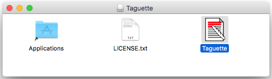
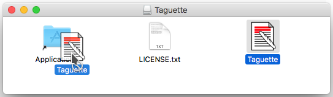
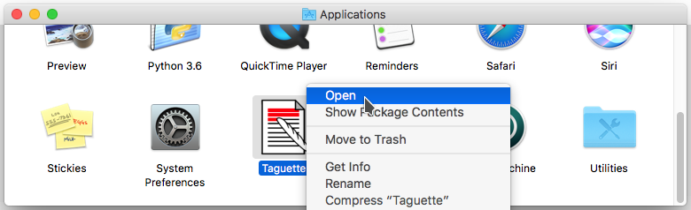
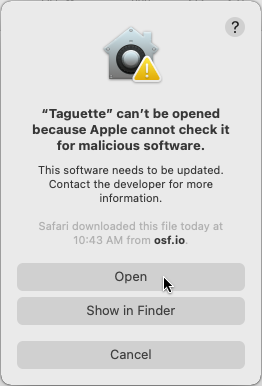

Install TAGUETTE
Taguette is released under the BSD license. You can read about the team behind Taguette on our About page.
You are able to use Taguette on our server for free at https://app.taguette.org and also install Taguette locally on your computer and/or server (if you'd like to self-host!). Using Taguette on our server (or your own) means that you will be able to collaborate with others while using Taguette on your own computer means you can use it offline and by yourself.
Installers
Taguette works on macOS, Windows, and Linux. The installers for macOS and Windows include Python, Taguette, and Calibre, so you don't need to install anything else. For Linux, the easiest way to install Taguette is to use pip, and those instructions are below.
-
On Windows...
Download the EXE file from our latest release page.
Open it, and click through the installer wizard's steps. A "Taguette" entry will appear in your Start Menu and on your Desktop, if you selected that option.
-
On macOS...
Download the DMG file from our latest release page.

When you open it, you will see a Finder window. You should drag the "Taguette.app" file to the "Applications" folder.

Then double-click on "Applications", and right-click on "Taguette.app" and choose "Open".


You will only have to do this the first time. After this, you will be able to start Taguette from the Launchpad or Spotlight.
Once you start the application, you will see a terminal window appear. This is normal! You can ignore it completely and use Taguette from your web browser (localhost:7465 should open automatically). Simply leave the terminal window open until you are done using Taguette, after which you can close that terminal window to stop Taguette.
Installation using pip
You first need to install Python 3 and Calibre, the open source e-book management software. Taguette uses a part of Calibre to convert documents into HTML, allowing you to highlight and tag parts of them.
Once you've installed Python, you can install Taguette with its dependencies from the command line with the following:
pip install taguette
After which you can simply run taguette in the terminal to get it going. You'll see the command line will still be running. This is ok! Don't worry about the terminal, but do leave it running. A browser window should appear, pointing you to localhost:7465, and you can begin working on your projects!
Development set-up
You can also install from a local clone of this repository, which will allow you to easily change the sources to suit your needs:
- Clone this git repository from the terminal:
git clone https://gitlab.com/remram44/taguette.git - Navigate on the command line to the repository you've just cloned locally, using the
cdcommand. To get help usingcd, use this tutorial. - Taguette uses Poetry for its packaging and dependency management. You will need to install Poetry
- Install Taguette and its dependencies by running
poetry install. We recommend you run this inside of a virtualenv if possible. - You can start taguette in development mode using
taguette --debug. This will start Tornado in debug mode, which means in particular that it will auto-restart every time you make changes. - Navigate to
localhost:7465to use Taguette!
Learn about using Taguette at our getting started page!